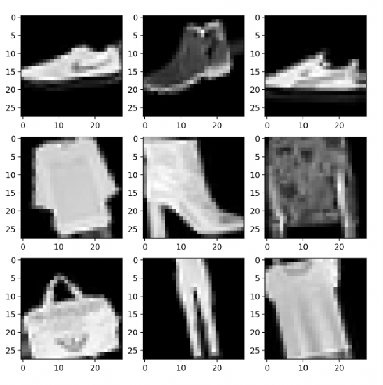

The generator starts with random numbers and turns them into a handwritten-looking image.
Generator output
28 × 28 grayscale
0,027,27
Ready
This lab implements the GAN approach introduced in Goodfellow et al.'s 2014 paper “Generative Adversarial Nets.” Both networks are written from scratch in NumPy—with no deep-learning framework—and were trained on Fashion-MNIST on my laptop. Change the latent signal to explore the generated images.
This experiment is a small, hands-on companion to the original adversarial-net framework—not a reproduction of the paper’s reported experiments.
Fashion-MNIST is a collection of small grayscale clothing images released by Zalando Research. The training code reads the training-image file, reshapes each example to 28 × 28 pixels, and scales its pixel values to [-1, 1] for the generator. The GAN learns from the images themselves; it does not use the clothing labels to generate a class on request.
Training input: train-images-idx3-ubyte. The supplied sample grid shows examples of the kind of images in the dataset; each image is a low-resolution grayscale thumbnail.

Both networks learn together during training. This page runs only the fixed generator to make new samples.
The reference diagram’s training loop, adapted to this project’s fully connected MNIST networks. Arrows show data during a training step; dashed lines show how errors teach the networks.
Think of a student artist and a careful reviewer working in rounds.
The generator starts with random numbers and turns them into a handwritten-looking image.
The discriminator sees a real training image and a generated one, then tries to tell which is which.
The judge learns from its mistakes; feedback also nudges the generator to make more convincing images. Repeat the rounds. After training, the generator can draw on its own.
The generator maps random noise z into a sample. The discriminator estimates whether an example came from the data or the generator. Training makes each model respond to the other.
In the paper’s idealized setting, with enough model capacity and optimization, the target is pg = pdata; the discriminator then cannot distinguish them and outputs 1/2.
Goodfellow et al. describe alternating discriminator updates with a generator update. The paper’s experiments use one discriminator step per generator step. Once trained, drawing a sample only needs a forward pass—no Markov chain.
This page focuses on that final sampling step: change z, keep the weights fixed, and inspect the resulting pixels.
The local project trains a NumPy multilayer perceptron on 28 × 28 MNIST images. This page requests samples from the local FastAPI backend; it is separate from the paper’s original experiments.
The generator uses LeakyReLU in its hidden layers, layer normalization in the 256 → 1024 block, and tanh at the output. The backend loads the generator weights from gan_weights_99.npz.